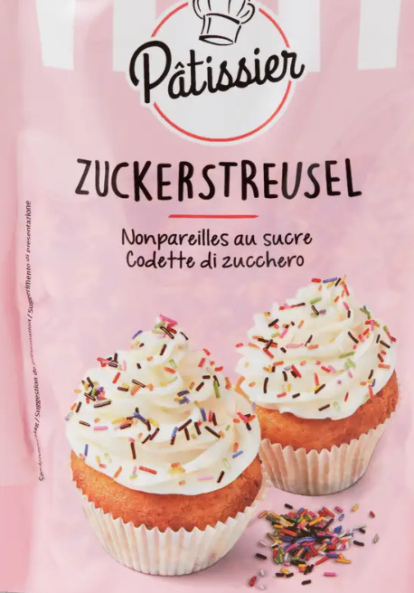
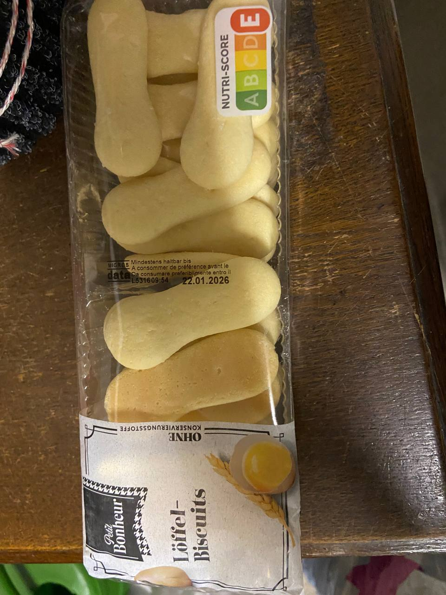
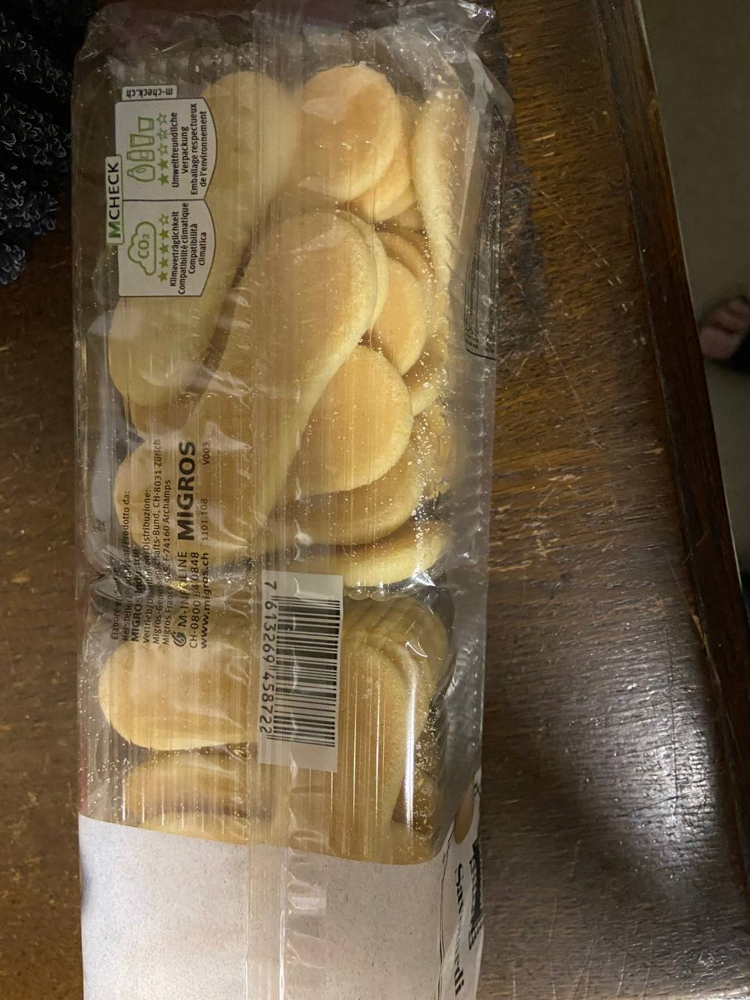
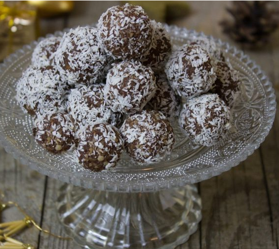
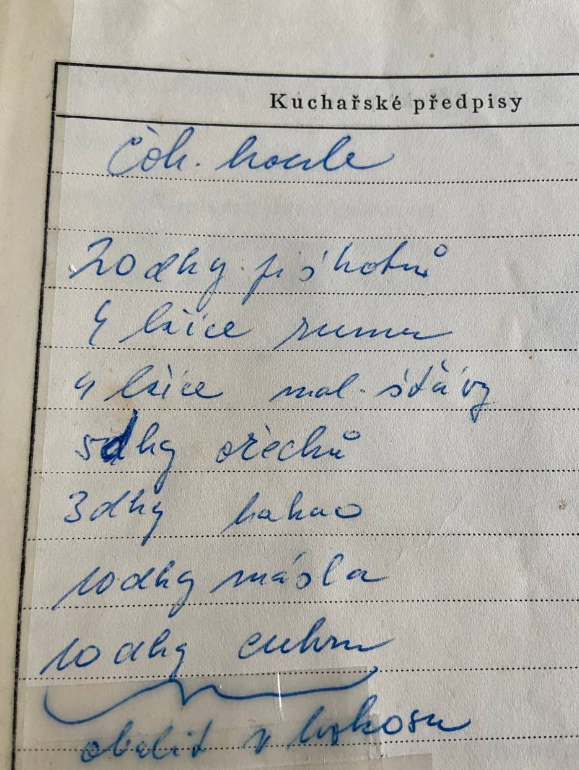
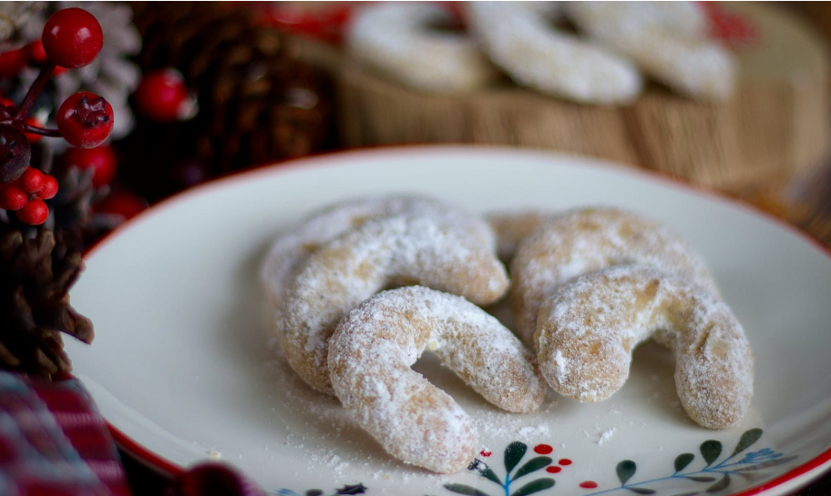
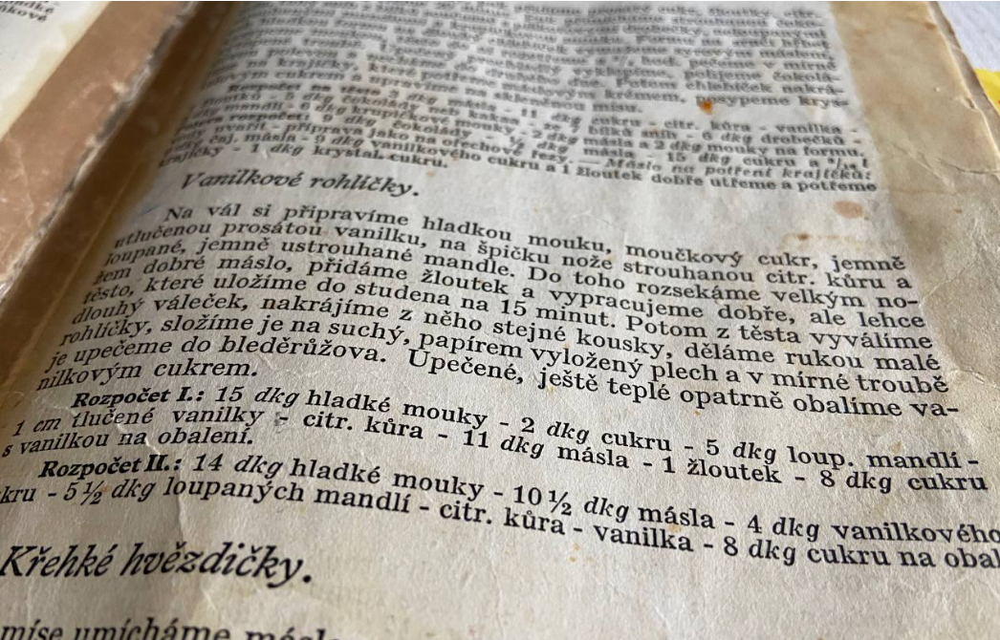
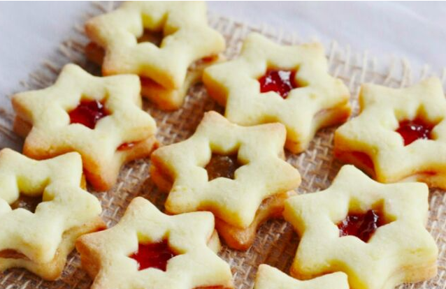
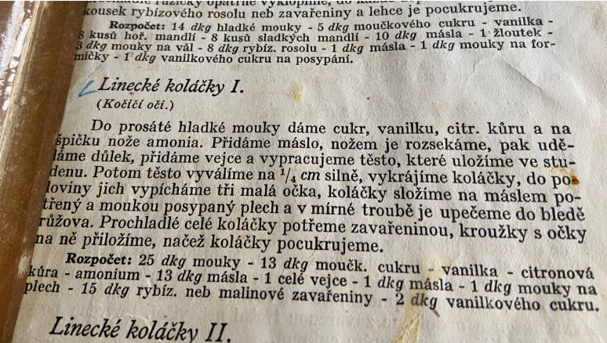

Aus Weissmehl, gemahlenen Walnüssen, Puderzucker und kalter Butter rasch einen krümeligen Teig kneten.
Den Teig in kleine Förmchen drücken und mit dem Daumen Körbchen mit dünnen Wänden formen.
Bei 160 °C ca. 12–15 Minuten backen – die Körbchen sollen hellrosa oder cremig weiss sein, dürfen nicht braun werden.
Noch warm vorsichtig aus den Förmchen klopfen und vollständig auskühlen lassen.
Löffelbiscuits fein zerbröseln (im Mixer oder mit dem Wallholz im Plastikbeutel). Butter schaumig rühren, die zerbröstelten Biskuits, Rum und Kakao dazugeben und gut verrühren.
Die ausgekühlten Körbchen mit der Rumfüllung füllen.
Die Körbchen mit flüssiger Schokolade übergiessen oder bis zur Hälfte eintauchen, sodass die untere Hälfte vollständig mit Schokolade überzogen ist. Noch vor dem Aushärten mit bunten Zuckerstreusel bestreuen.
☞ Grosi empfiehlt
Bella – gemahlene Walnüsse

Pâtissier – Zuckerstreusel

Migros – Löffelbiscuits

(Rückseite)Walnuss-Backförmchen – z.B. bei Amazon erhältlich
Schokoladenkugeln
Ohne Backen · ca. 30 Stück


Grosis Originalrezept
Zutaten
Löffelbiscuits
200 g
Butter (Zimmertemperatur)
100 g
Puderzucker
100 g
gemahlene Walnüsse
50 g
Kakao
30 g
Rum
4 EL
Himbeersirup
4 EL
Kokosraspeln
nach Bedarf
Zubereitung
Löffelbiscuits fein zerbröseln – im Mixer oder mit dem Wallholz im Plastikbeutel.
Alle Zutaten in einer Schüssel zu einer gleichmässigen Masse vermengen.
Ist die Masse zu weich, 30 Minuten im Kühlschrank kühlen.
Mit feuchten Händen Kugeln von ca. 3 cm Durchmesser formen.
Jede Kugel in Kokosraspeln wälzen.
Kalt stellen und mindestens 1 Stunde fest werden lassen.
Aus Halbweissmehl, Zucker, Butter, Ei, Salz und gemahlenen Walnüssen rasch einen glatten Teig kneten. In Frischhaltefolie einwickeln und 1 Stunde im Kühlschrank ruhen lassen.
Den Ofen auf 180 °C vorheizen. Den Teig auf der bemehlten Arbeitsfläche ca. 5 mm dick ausrollen und runde Guetzli (ca. 4,5 cm) ausstechen. Auf ein mit Backpapier belegtes Blech legen.
Ca. 15 Minuten goldbraun backen. Vollständig auskühlen lassen.
Für die Füllung: Butter schmelzen, Zucker, gemahlene Walnüsse, Aprikosenkonfitüre und Rum dazugeben und gut verrühren.
Die Hälfte der Guetzli mit der Füllung bestreichen und mit der zweiten Hälfte zusammenklappen.
Schokolade im Wasserbad schmelzen, mit Schlagrahm verrühren und die Guetzli damit bestreichen.
Je eine Walnusshälfte auf die Schokolade legen und leicht mit Puderzucker bestäuben.
⏱ Vorbereitung: ~60 Min. · Kühlzeit: 1 Std. · Backzeit: ~15 Min.
☞ Grosi empfiehlt
Bella – gemahlene Walnüsse
Vanille Gipfeli
Ca. 40 Stück


Rezept aus einem alten Kochbuch
Zutaten
Weissmehl
150 g
Zucker
20 g
kalte Butter
110 g
geschälte Mandeln (fein gerieben)
50 g
Eigelb
1 Stk.
gemahlene Vanille
½ TL
abgeriebene Zitronenschale
½ Zitrone
Zum Wälzen
Vanillezucker
80 g
Zubereitung
Weissmehl auf die Arbeitsfläche geben, Zucker, Vanille, Zitronenschale und geriebene Mandeln dazugeben und vermengen.
Kalte Butter mit einem grossen Messer in die Mehlmischung einarbeiten, Eigelb dazugeben und rasch zu einem glatten Teig kneten – nicht zu lange kneten.
In Frischhaltefolie einwickeln und 15 Minuten im Kühlschrank ruhen lassen.
Den Teig zu einer langen Rolle formen und in gleich grosse Stücke schneiden (ca. 15 g).
Jedes Stück zu einem kleinen Hörnchen (Hufeisenform) rollen.
Auf ein trockenes, mit Backpapier belegtes Blech legen.
Bei 160–170 °C ca. 12–15 Minuten backen, bis sie leicht rosa sind – dürfen nicht braun werden.
Noch warm vorsichtig im Vanillezucker wälzen.
Variante II: 140 g Weissmehl · 105 g Butter · 55 g Mandeln · 40 g Vanillezucker im Teig (statt Zucker und Vanille getrennt) · Zitronenschale · 80 g Zucker zum Wälzen
Linzer Guetzli
Linzer Augen · ca. 25 Paare


Rezept aus einem alten Kochbuch
Teig
Weissmehl
250 g
Puderzucker
130 g
Butter
130 g
Ei
1 Stk.
Vanilleextrakt
1 TL
abgeriebene Zitronenschale
½ Zitrone
Hirschhornsalz (oder ½ TL Backpulver)
1 Prise
Füllung und Fertigstellung
Johannisbeer- oder Himbeerkonfitüre
150 g
Vanillezucker (zum Bestäuben)
20 g
Zubereitung
Gesiebtes Weissmehl mit Puderzucker, Vanille, Zitronenschale und Hirschhornsalz vermengen.
Butter dazugeben und mit einem Messer in die Mehlmischung einarbeiten. In der Mitte eine Mulde formen, das Ei dazugeben und rasch zu einem Teig kneten.
In Frischhaltefolie einwickeln und mindestens 30 Minuten im Kühlschrank ruhen lassen.
Den Ofen auf 160–170 °C vorheizen. Das Blech mit Butter einfetten und leicht bemehlen.
Den gekühlten Teig ca. 3 mm dick ausrollen und runde Guetzli (ca. 4–5 cm) ausstechen.
Aus genau der Hälfte der Guetzli drei kleine runde Augen ausstechen.
Ca. 10–12 Minuten backen – die Guetzli sollen leicht rosa sein, nicht braun.
Vollständig auskühlen lassen.
Die vollen Guetzli mit Konfitüre bestreichen, die Guetzli mit den Augen darauflegen und leicht andrücken.